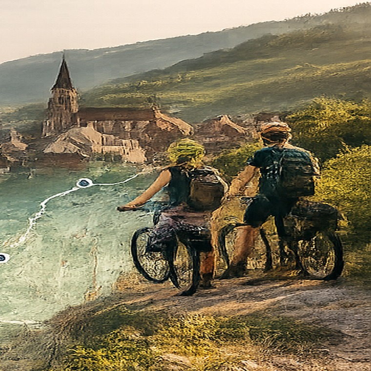

CARNET DE VOYAGE À VÉLO
De l’Alsace à la Méditerranée
De Strasbourg à Sète, du 1er au 27 septembre 2026.

Accès rapide
Les journées
Les quatre premières journées sont détaillées. Le voyage à vélo commence le 5 septembre.
Liste des itinéraires RideWithGPS
Les grands itinéraires du voyage. Les petits déplacements locaux restent dans la journée concernée.
Réservations et transports
56, rue Baraban, Lyon
Ouvrir dans Google Maps17, rue des Orfèvres, 67000 Strasbourg
Ouvrir dans Google MapsRhônexpress.
Billetterie RhônexpressHoraire et réservation des deux vélos à confirmer. Ne pas considérer cette section comme une réservation.
SNCF ConnectJournal de route
Les notes restent enregistrées dans ce navigateur sur cet appareil.
Informations utiles
Renseignements pratiques pour le voyage. Aucun document confidentiel n’est conservé dans le site.
112 — numéro d’urgence européen
15 — SAMU, urgence médicale
17 — Police
18 — Pompiers
Canada et États-Unis : 1 888 881-8010
Ailleurs dans le monde, à frais virés : 1 519 945-8346
Communiquer avec le centre d’assistance avant un traitement lorsque la situation le permet.
Les passeports et contrats d’assurance doivent rester dans iCloud Drive ou dans l’application Fichiers, et non dans GitHub Pages.
📜 Historique des versions
v1.4 — intégration directe de RideWithGPS.
v1.5 — nouvelle section Parcours.
v1.6 — réorganisation de la section Informations.
v1.7 — retrait des documents confidentiels.
v1.8 — ajout du Conseil d’Alice.
v1.9 — recherche d’Airbnb avec Alice.
v1.10 — trajet TER Lyon → Strasbourg.
v1.11 — descriptions touristiques et libellé Airbnb amélioré.
v1.12 — nouvelle icône et modèle enrichi des journées de vélo.
v2.0 — ajout du Jour 6 et début de la phase de contenu.
v2.0.1 — ajout du parcours Obernai → Colmar dans Parcours et retrait du bouton GPX défectueux.
v2.0.2 — activation du lien RideWithGPS du Jour 6.
v2.2.0 — correction du lien touristique de Rouffach et maintien de l’ouverture RideWithGPS du Jour 7.
Version actuelle : v2.2.0